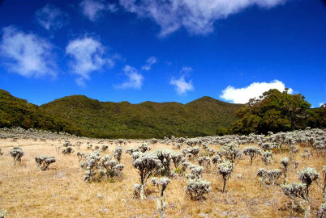

Gunung Gede adalah gunung api bertipe stratovolcano. Lokasi Gunung Gede yang terbilang cukup dekat dengan ibukota Jakarta menjadikannya pilihan destinasi pendakian yang cukup populer. Untuk melakukan pendakian Gunung Gede perlu melakukan booking secara online terlebih dahulu di website Taman Nasional Gunung Gede Pangrango.
Terdapat 3 jalur pilihan menuju puncak diantaranya jalur Cibodas, Gunung Putri, dan Selabintana. Jalur Cibodas adalah jalur paling populer dan membutuhkan waktu sekitar 7-10 jam. Jalur Gunung Putri yang terletak tidak jauh dari Cibodas adalah jalur tercepta yaitu sekitar 6-8 jam namun memiliki medan yang lebih terjal. Sedangkan jalur Selabintana di Sukabumi adalah jalur yang jarang diminati karena membutuhkan waktu lebih lama sekitar 9-12 jam dan medan yang paling sulit.
Pada pendakian Gunung Gede terdapat Alun-alun Surya Kencana yang merupakan dataran seluas 50 hektar yang banyak terdapat bunga edelweiss. Bagi para pendaki yang melalui jalur Gunung Putri dan Selabintana dapat langsung menuju Alun-alun Surya Kencana sebelum mencapai puncak Gunung Gede. Sedangkan jika melalui jalur Cibodas maka pendaki harus melalui puncak Gunung Gede dahulu baru bisa menuju Surya Kencana. Banyaknya sumber air, dataran yang luas, serta pemandangan yang indah membuat Surya Kencana menjadi tempat pilihan para pendaki untuk mendirikan camp.